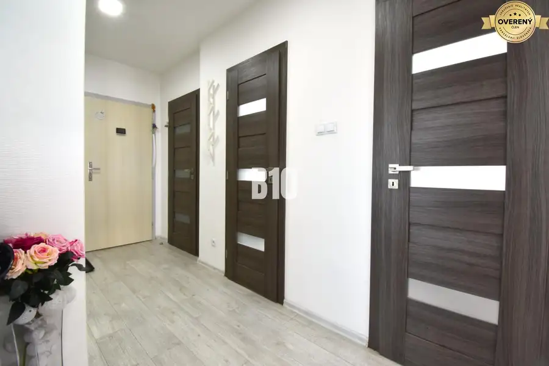

3izbový byt s parkovaním vo dvore
Bytča
- Dispozícia3-izbový
- Plocha68 m²
- Stavúplne prerobený
- Vlastníctvoosobné
O nehnuteľnosti
B10 Vám ponúka na predaj pekný, svetlý a vkusne zrekonštruovaný 3-izbový byt s výmerou 68 m², nachádzajúci sa v zateplenom tehlovom bytovom dome v bezprostrednej blízkosti centra mesta.Miesto spája výbornú dostupnosť so súkromím – súčasťou bytovky je oplotený pozemok s možnosťou parkovania vo dvore, s potenciálom výstavby vlastnej garáže.Samotný interiér prešiel pred pár rokmi kompletnou rekonštrukciou, vrátane rozvodov vody a elektriny. Výsledkom je moderný, funkčný a útulný priestor, ktorý je pripravený na okamžité bývanie bez nutnosti ďalších investícií – s výnimkou prípadného vymaľovania. Ďalšou výhodou je, že byt sa predáva kompletne zariadený.Dispozícia:Vstup do chodby, odkiaľ sa dostanete do kúpeľne s toaletou, ďalej do priestrannej obývacej izby s balkónom, spojenej s jedálňou a prechodom do kuchyne. Samostatná spálňa a detská izba. Bonusom sú tri vstavané skrine, ktoré elegantne riešia úložný priestor.Ďalším benefitom je orientácia Východ, Juh a Západ, čiže byt je prakticky celý deň príjemne slnečný.Patrí k nemu murovaná pivnica na prízemí, spoločné priestory ako kočikáreň a sušiareň. Lokalita:Centrum mesta Bytča máte doslova na skok, zároveň bývate v pokojnejšom prostredí. V pešej dostupnosti nájdete obchody, služby, školy, škôlky, zdravotnú starostlivosť aj možnosti na voľný čas.V prípade, že Vás naša ponuka zaujala neváhajte kontaktovať:Tel.č.: ID: 138855Cena: 164 990€ Aj váš dom, byt alebo pozemok predáme na počkanie #pocelomslovensku
Parametre
| Rozloha pozemku | 1129 m² |
|---|---|
| Úžitková plocha | 68 m² |
| Vlastníctvo | osobné |
| Stav | úplne prerobený |
| Postavené z | tehla |
| Dátum zverejnenia | 17. 9. 2026 |
Kde to je
Mohlo by Vás zaujímať

BytRezervované10 179 990 €Moderný 3-izbový byt s pekným výhľadom Bytča 3-izbový66 m² B10 Vám ponúka na predaj veľmi pekne zrekonštruovaný 3-izbový byt, s krásnym výhľadom na mesto Bytča, s výmerou 66 m². Pri rekonštrukcií prešiel…